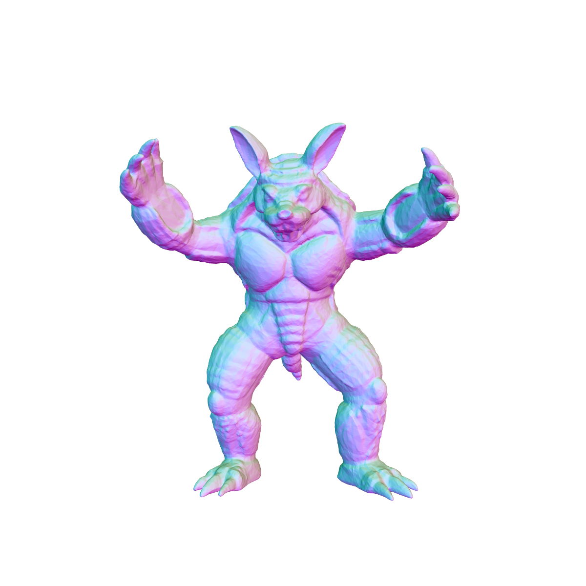
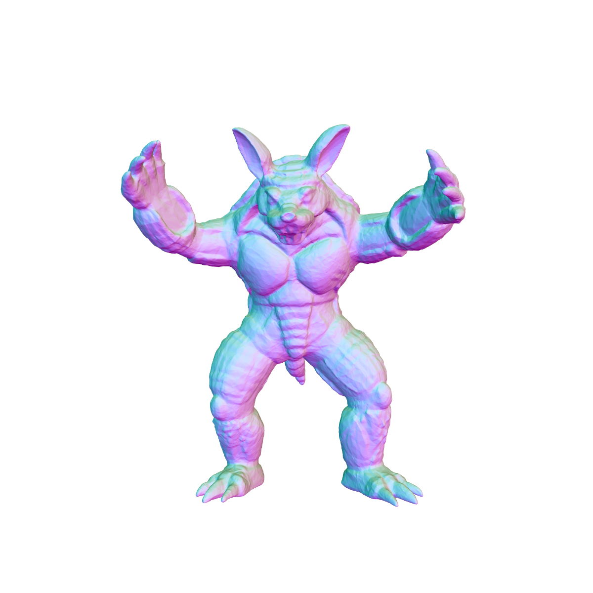

The phenomenon of spectral bias describes how neural networks prioritize low-frequency functions during training.
Rather than analyzing this in the function's Fourier spectrum, we examine how it arises from the linear-algebraic structure
linking activations and weights through gradients.
Based on the stable rank of layer updates, we clarify how activations shape layer weights, why this reinforces a low-frequency
bias in INRs, and how different interventions address this bias.
Stable Rank and Model Expressiveness
To quantify the effective dimensionality of this process, we use the stable rank \(s(A)\) as a numerically stable measure
of diversity for a matrix \(A\) with singular values \(\sigma_{i}\):
$$ s(A) = \frac{\|A\|_F^2}{\|A\|_2^2} = \frac{\sum_i \sigma_i^2}{\sigma_{\max}^2} $$
A rank-1 matrix has \(s(A)=1\), while a semi-orthogonal matrix with rank \(k\) has \(s(A)=k\).
Applying this inequality to the batched gradient \(\nabla_{W_{l}}\mathcal{L}=G_{l+1}H_{l}^{\top}\) gives:
$$ s(\nabla_{W_{l}}\mathcal{L}) \le \text{rank}(H_{l}) $$
Thus, for a single layer, it is crucial to understand that the input activations constrain the effective dimensionality of the
update and consequently its capacity to explore the layer's weight space.


 
